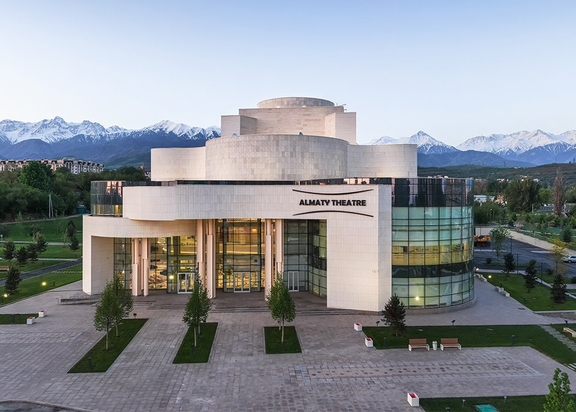
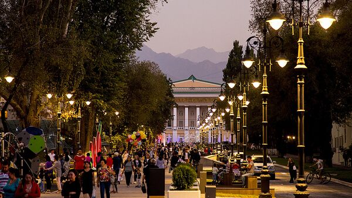
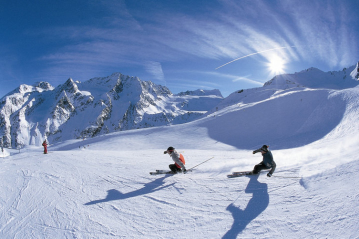
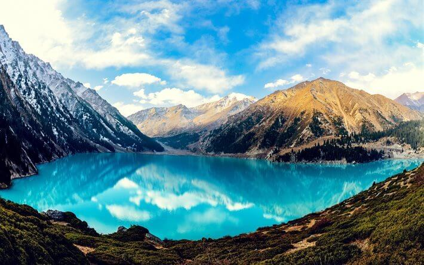
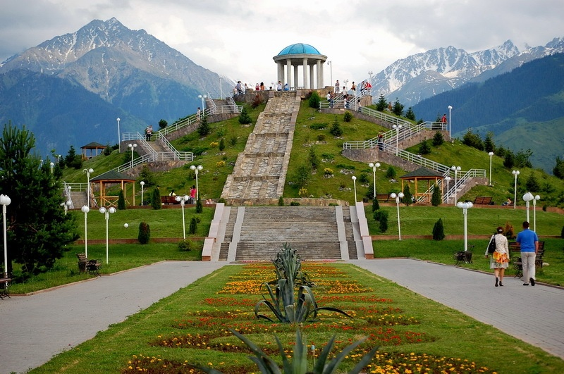

Almaty Theatre
Almaty Theater is a modern space for ballet performances, performances, creative evenings, presentations, state events. Despite the fact that the main activity of the theater is dedicated to ballet, many other events take place within the walls of this majestic building, the construction of which was completed in 2020. Look for the full poster of the Almaty theater on our website.
Panfilov Street
Panfilov Street is a pedestrian street in the center of Almaty. It is popular among street musicians and young people. It has many different restaurants and this street is ideal for evening walks around the city at any time of the year.
Shymbulak
Shymbulak is a popular ski resort near Almaty, located on the Zailiysky Alatau ridge a little higher than the Medeu high-mountain skating rink. Favorable natural conditions attract tourists, climbers, skiers to this area with an accessible terrain, allow laying ski slopes with a height difference of 900-1000 m. In this regard, since 1954, the Chimbulak ski sports base began to function here.
Big Almaty Lake
Big Almaty Lake is a high-altitude reservoir in the Zailiysky Alatau at an altitude of 2510 meters above sea level, 15 kilometers south of the city of Almaty. Like the vast majority of the Tien Shan lakes, it arose as a result of earthquakes.
Park of the First President
Park of the First President is an arboretum in the city of Almaty. The park has been open since July 2010. The park was founded on one of the sites above Al-Farabi Avenue, where the lands of the former apple orchards of the aport were once located. The park is a venue for various events, such as: "Almaty - a city of flowers", "Carnival of dolls", "Apple Festival" and sports marathons.
